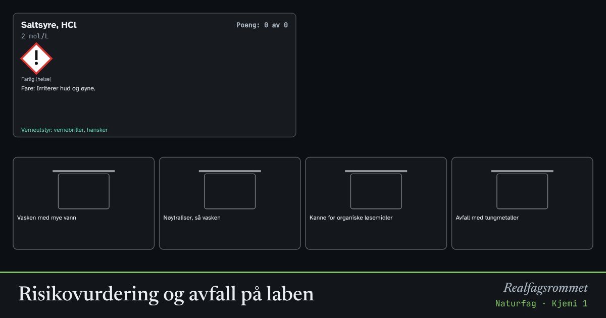

Risikovurdering og avfall på laben
Før et forsøk må du vite hvilke farer kjemikaliene har, hvilket verneutstyr du trenger, og hvor avfallet skal. Farepiktogrammene gir et raskt overblikk. Sorter kjemikaliene til riktig avfall.
Start animasjonen
Formler
Om animasjonen
En risikovurdering svarer på: Hva kan gå galt? Hvor sannsynlig er det, og hvor alvorlig? Hva gjør vi for å unngå det? Informasjonen finner du i sikkerhetsdatabladet for hvert kjemikalie.
Farepiktogrammene er røde ruter med svart symbol: flamme (brannfarlig), etsende, utropstegn (helsefarlig, irriterende), helsefare (alvorlig langtidsvirkning), miljø (giftig for liv i vann) og hodeskalle (giftig).
Avfall: Ufarlige vannløsninger kan helles i vasken med mye vann. Syrer og baser nøytraliseres først. Organiske løsemidler samles i egne kanner, og løsninger med tungmetaller som kobber og sølv samles separat fordi de er giftige for livet i vann.
Dette er forenklede retningslinjer. Følg alltid skolens egne rutiner og sikkerhetsdatabladet.
Prøv dette
- Hvorfor skal ikke kobbersulfat helles i vasken?
- Hvilket verneutstyr bruker du alltid på laben?
- Hva er forskjellen på piktogrammet med utropstegn og piktogrammet med helsefare?
- Lag en risikovurdering for et forsøk der du løser kobbersulfat i vann.
Kompetansemål
- Naturfag: Risikovurdere forsøk og håndtere avfallet forsvarlig
Mer om analyse, syntese og grønn kjemi
- Papirkromatografi og Rf-verdier
- Grønn kjemi: atomøkonomi
- Måleusikkerhet: tilfeldige og systematiske feil